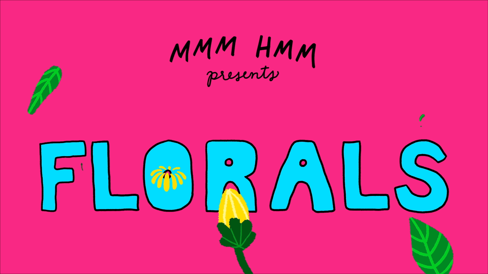

about
contact
projects /
GoGo
GoGo is a fictional tech company, and its flagship product is a handheld teleportation device. (Crazy, I know.) Their mission is to deliver the future and get you to where you want to be. With my branding, I wanted to boast a product that’s high-tech but sleek, powerful but simple.


Deep Sea Studios
Deep Sea Studios is an arts collective and film production company based in Riga, Latvia. I designed and coded their website, keeping in mind to let their beautiful imagery take focus. The site is responsive for all device widths and integrates with external libraries for attributes like the grid and image carousels.
What If I...
I designed and animated the title sequence for the comedy web series, What If I... In the show, neurotic New Yorker Jamie imagines how her smallest decisions could have catastrophic results. I wanted the imagery in the title sequence to reflect the odd and unique situations Jamie creates in her head.
Motherfu*ker!
Tarantino films are relentless in their use of profanity. I thought it would be fun to design bold infographics to show just how vulgar the language is. With data collected by FiveThirtyEight, I was able to communicate swear words by their frequency and highlight the film that swore the most.
MMM HMM
I animated a landing page for MMM HMM's floral edition of their online food magazine. I wanted it to be energetic and spunky to reflect their fun content.
Eat2Explore
I animated the explainer video for food delivery service Eat2Explore. Their mission is to bring family bonding time back into your life through cooking and learning about different cultural cuisines.